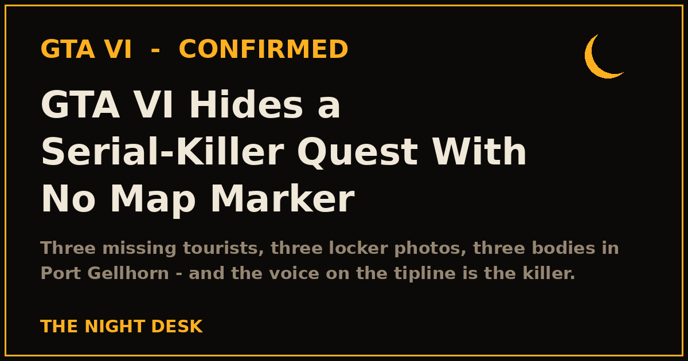

November 21, 2026 · 3 min read
GTA VI Hides a Serial-Killer Quest in Port Gellhorn — and It Never Gives You a Map Marker

Headline card by The Night Desk
GTA VI Hides a Serial-Killer Quest in Port Gellhorn — and It Never Gives You a Map Marker
Most of GTA VI's secrets announce themselves eventually — a marker, a phone call, a stranger on a corner. This one doesn't. There is a full serial-killer quest hidden in Port Gellhorn, and the game never once points at it.
This one is confirmed, not rumored: Cultured Vultures published a complete step-by-step guide on Nov. 20, GTA6VC's missing-persons guide independently walks the same three sites, gta6.house's Starlet Motel entry covers the same chain, and multiple players have posted their own walkthroughs. Here is the whole route.
1. The Starlet Motel office — read the posters (early Chapter 2).
On the white pillar by reception sit three Missing notices for three tourists, with a tipline number: 555-MISSING, the Kelly County Tip Line. Read them. That's the entire setup — no quest log entry, no map marker, nothing.
2. The warehouse across from Moses' garage, Port Gellhorn.
Head to the warehouse opposite Moses Watkins' garage. The front shutter slams shut if you try it; go around the right side and crawl in through the low hole in the wall. Inside, past the mannequins, three lockers hold three photographs, which land in your phone's "Creepy Photos" album: a Junkyard Photo, a Trailer Park Photo, and a Tree Photo. Each photograph is a body.
3. Body one — the pink PRTYGRL car.
The junkyard east of the Port Gellhorn Pay 'n' Spray. Find the bright pink car with the PRTYGRL plate and open the trunk. The first tourist is inside. Use Report Body to call it in to the tipline.
4. Body two — under the trailer floorboards.
The trailer park below the water tower north of town. Enter the blue trailer with the interactable door and examine the floorboards on the right. The second tourist is underneath. Report this one too — this time a man actually picks up, sounds surprised anyone has made progress, and asks you to keep going.
5. Body three — the submerged car.
West of town toward Wild Hog Point, a marshy pond by a dead tree. All that's visible is a roof rack above the water. The third tourist is in the submerged car below it. Mind the alligators. Report the body.
6. The turn.
After the third report, the tipline voice calls you — and invites you back to the warehouse. Alone. Go. The fifth locker now holds one more photograph: a photo of Jason and Lucia. Then the chloroform. The finale switches to your partner, who digs you out of a rock-piled box in a mine, and the two of you hunt the killer down together.
There is no cash reward for any of it. Guides say you can take the killer's glasses. The quest is the reward.
One honest loose end. The guides agree on everything except the killer's name: Cultured Vultures spells it Alvan West, gta6.house spells it Alvin West. We are going with Alvan, per the fullest guide, and flagging the wobble rather than hiding it — if a third outlet settles the spelling, this article will be updated.
The Night Desk is tracking GTA VI's secrets as they verify. If you run this quest, record the fifth locker — that's the shot everybody will be looking for.
Source: Cultured Vultures, "GTA 6: How to Find the Port Gellhorn Missing Tourists" (Nov. 20, 2026); GTA6VC Port Gellhorn missing persons guide; gta6.house Starlet Motel entry; independent player walkthroughs. This is guide and community intel collected by The Night Desk — not our own gameplay or discovery.
Source: Cultured Vultures — read the original report
← Back to latest stories